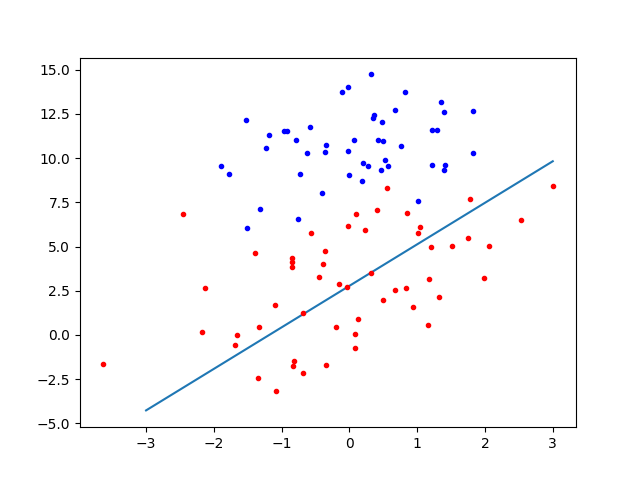
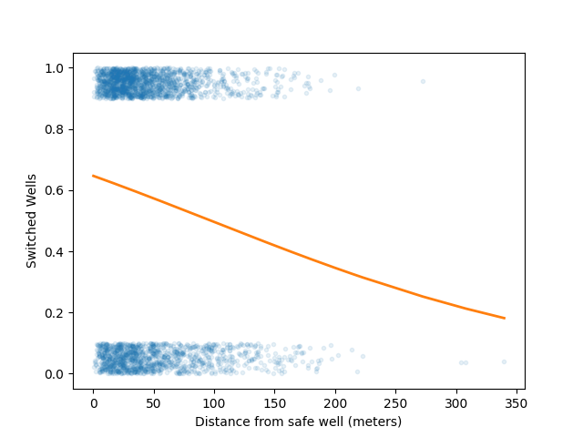

Lojistik Regresyon (Logistic Regression)
Lojistik regresyon normal regresyonun $\theta^T x$ olarak kullandığı ağırlıklar (katsayılar) ile verinin çarpımını alır ve ek bir filtre fonksiyonundan geçirerek onları 0/1 değerleri bağlamında bir olasılığa eşler. Yani elimizdeki veri çok boyutta veri noktaları ve o noktaların 0 ya da 1 olarak bir "etiketi" olacaktır. Mesela
from pandas import *
df = read_csv("testSet.txt",sep='\t',names=['x','y','labels'],header=None)
df['intercept']=1.0
data = df[['intercept','x','y']]
labels = df['labels']
print df[['x','y','labels']][:10]
x y labels
0 -0.017612 14.053064 0
1 -1.395634 4.662541 1
2 -0.752157 6.538620 0
3 -1.322371 7.152853 0
4 0.423363 11.054677 0
5 0.406704 7.067335 1
6 0.667394 12.741452 0
7 -2.460150 6.866805 1
8 0.569411 9.548755 0
9 -0.026632 10.427743 0
Görüldüğü gibi veride $x,y$ boyutları için etiketler (labels) verilmiş. Lojistik regresyon bu veriyi kullanarak eğitim sonrası $\theta$'ları elde eder, bunlar katsayılarımızdır, artık bu katsayıları hiç görmediğimiz yeni bir veri üzerinde 0/1 etiketlerinin tahminini yapmak için kullanabiliriz.
Filtre fonksiyonu için kullanılan bir fonksiyon sigmoid fonksiyonudur, $g(x)$ ismini verelim,
$$ g(x) = \frac{e^{x}}{1+e^{x}} $$
Bu nasıl bir fonksiyondur, kabaca davranışını nasıl tarif ederiz? Cebirsel olarak bakarsak, fonksiyon öyle bir durumda ki ne zaman bir $x$ değeri geçersek, bu değer ne kadar büyük olursa olsun, bölendeki değer her zaman bölünenden 1 daha fazla olacaktır bu da fonksiyonun sonucunun 1'den her zaman küçük olmasını garantiler. Çok küçük $x$ değerleri için bölüm sonucu biraz daha büyük olacaktır tabii, vs.
Daha temiz bir ifade için bölen ve bölüneni $e^{-x}$ ile çarpalım,
$$ g(x) = \frac{e^{x}e^{-x}}{e^{-x}+e^{x}e^{-x}} $$
$$ g(x) = \frac{1}{1+e^{-x}} $$
Sigmoid fonksiyonun "-sonsuzluk ile +sonsuzluk arasındaki değerleri 0 ve 1 arasına eşlediği / indirgediği (map)" ifadesi de litaratürde mevcuttur.
def sigmoid(arr):
return 1.0/(1+exp(-arr))
x = np.array(arange(-10.0, 10.0, 0.1))
plt.plot(x,sigmoid(x))
plt.savefig('stat_logit_02.png')

Üstteki grafiğe bakınca katsayılarla çarpım, toplam ardından sonucun niye bu fonksiyona verildiğini anlamak mümkün. Sigmoid'in 0 seviyesinden 1 seviyesine zıplayısı oldukça hızlı ve $x$ kordinatı bağlamında (ve 0.5'ten küçük $y$'ye eşlenen) sıfır öncesi bölgesi, aynı şekilde sıfır sonrası (ve 0.5'ten büyük $y$'ye eşlenen) bölgesi oldukça büyük. Yani bu fonksiyonu seçmekle veriye katsayılarla çarpılıp 0 ya da 1 bölgesi altına düşmesi için oldukça geniş bir şans veriyoruz. Böylece veriyi iki parçaya ayırmak için şansımızı arttırmış oluyoruz.
Peki sigmoid fonksiyonu bir olasılık fonksiyonu (dağılımı) olarak kullanılabilir mi? Entegralini alalım, ve -/+ sonsuzluklar üzerinden alan hesabı yapalım, sonucun 1 çıkması gerekli,
import sympy
x = sympy.Symbol('x')
print sympy.integrate('1/(1+exp(-x))')
x + log(1 + exp(-x))
Daha temizlemek için
$$ x + \ln(1 + e^{-x}) $$
$x$ ifadesi aynı zamanda suna eşittir $x=ln( e^{x} )$. Bu ifade bize kolaylık sağlayacak böylece,
$$ \ln e^{x} + \ln(1+e^{-x}) $$
diyebiliriz. Doğal log'un (ln) çarpımları toplamlara dönüştürdüğünü biliyoruz, bunu tersinden uygulayalım,
$$ \ln (e^{x}\cdot 1 + e^{x}e^{-x}) $$
$$ \ln (e^{x} + 1) = \ln (1 + e^{x} ) $$
print log (1+exp(-inf))
print log(1+exp(inf))
0.0
inf
Demek ki fonksiyon bir olasılık dağılımı olamaz, çünkü eğri altındaki alan sonsuz büyüklüğünde. Aslında bu fonksiyonun kümülatif dağılım fonksiyonu (cumulative distribution function -CDF-) özellikleri vardır, yani kendisi değil ama türevi bir olasılık fonksiyonu olarak kullanılabilir (bu konumuz dışında). Her neyse, sigmoid'in bir CDF gibi hareket ettiğini $g$'nin 0 ile 1 arasında olmasından da anlıyoruz, sonuçta CDF alan demektir (yoğunluğun entegrali) ve en üst değeri 1 demektir, ki bu CDF tanımına uygundur.
Şimdi elimizde olabilecek $k$ tane değişken ve bu değişkenlerin bilinmeyen katsayıları için 0 ve 1'e eşlenecek bir regresyon oluşturalım. Diyelim ki katsayılar $\theta_0,..,\theta_k$. Bu katsayıları değişkenler ile çarpıp toplayarak $h(x)$'e verelim, (0/1) çıkıp çıkmayacağı katsayılara bağlı olacak, verideki etiketler ile $h(x)$ sonucu arasında bir bağlantı kurabilirsek, bu bize katsayıları verebilir. Bu modele göre eğer $\theta$'yi ne kadar iyi seçersek, eldeki veri etiketlerine o kadar yaklaşmış olacağız. Şimdi sigmoid'i katsayılarla beraber yazalım,
$$ h_\theta(x) = g(\theta^T x) = \frac{1}{1+e^{-\theta^T x}} $$
"Veriye olabildiğince yaklaşmak için en iyi $\alpha$'yi bulmak" sözü bize maksimum olurluk (maximum likelihood) hesabını hatırlatmalı. Bu hesaba göre içinde bilinmeyen $\alpha$'yi barındıran formülün üzerinden tüm verinin sonuçlarının teker teker birbiri ile çarpımı olabildiğince büyük olmalıdır. Bu ifadeyi maksimize edecek $\alpha$ veriye en uygun $\alpha$ olacaktır.
Şimdi her iki etiket için ve sigmoid'i kullanarak olasılık hesaplarını yapalım,
$$ P(y=1 | x;\theta) = h_\theta(x) $$
$$ P(y=0 | x;\theta) = 1 - h_\theta(x) $$
Not: Olasılık değerleri (büyük $P(\cdot)$ ile) ve CDF fonksiyonları olurluk hesabında kullanılabilir. $P(\cdot)$ ile CDF bağlantısı var, $P(X<x)$ gibi kümülatif alansal hesapların CDF üzerinden gerçekleştirilebildiğini hatırlayalım.
Devam edelim, hepsi bir arada olacak şekilde yanyana koyarsak ve sonuca, $y$'yi doğru tahmin edip etmediğimizin ölçümünü de eklersek,
$$p(y | x;\theta) = (h_\theta(x))^y (1-h_\theta(x))^{1-y}$$
Olurluk için tüm veri noktalarını teker teker bu fonksiyona geçip sonuçlarını çarpacağız (ve verilerin birinden bağımsız olarak üretildiğini farzediyoruz), eğer $m$ tane veri noktası var ise
$$ L(\theta) = \prod_{i=1}^{m} (h_\theta(x^i))^{y^i} (1-h_\theta(x^i))^{1-{y^i}}$$
Eğer log'unu alırsak çarpımlar toplama dönüşür, işimiz daha rahatlaşır,
$$ l(\theta) = \log L(\theta) $$
$$ = \sum_{i=1}^{m} y^i \log( (h_\theta(x^i)) ) + (1-{y^i}) \log( (1-h_\theta(x^i)) ) $$
İşte bu ifadenin maksimize edilmesi gerekiyor.
Ama daha fazla ilerlemeden önce bir eşitlik ve bir türev göstermemiz gerekiyor. Önce eşitlik
$$ 1-g(z) = g(-z) $$
İspat
$$ 1-\frac{1}{1+e^{-z}} = \frac{1+e^{-z}-1}{1+e^{-z}}$$
$$ \frac{e^{-z}}{1+e^{-z}} = \frac{1}{1+e^{z}}$$
Hakikaten son eşitliğin sağ tarafına bakarsak, $g(-z)$'yi elde ettiğimizi görüyoruz. Şimdi türeve gelelim,
$$ g'(z) = \frac{d}{dz} \frac{ 1}{1+ e^{ -z}} $$
Ispat
$$ = \frac{1}{(1+ e^{-z})^2} (e^{-z}) $$
$e^{ -z}$ türevinden bir eksi işareti geleceğini beklemiş olabiliriz, fakat hatırlanacağı üzere
$$\frac{d}{dx} \frac{ 1}{1+x} = \frac{-1}{(1+x)^2}$$
Yani eksiler birbirini yoketti. Şimdi iki üstteki denklemin sağ tarafını açalım
$$ = \frac{1}{1+e^{-z}} \frac{e^{-z}}{1+e^{-z}} $$
$$ = \frac{1}{1+e^{-z}} \frac{1}{1+e^{z}} $$
Çarpımda iki bölüm var, bölümler $g(z)$ ve $g(-z)$ olarak temsil edilebilir, ya da $g(z)$ ve $1-g(z)$,
$$ = g(z)(1-g(z)) $$
Bu bağlamda ilginç bir diğer denklem log şansı (log odds) denklemidir. Eğer ilk baştaki denklemi düşünürsek,
$$ p = P(y=1|x;\theta) = g(z) = \frac{e^{z}}{1+e^{z}} $$
Bu denklem 1 olma olasılığını hesaplıyor. Temiz bir denklem log şansı olabilir ki bu denklem olma olasılığını olmama olasılığına böler ve log alır.
$$ \log \bigg( \frac{p}{1-p} \bigg)$$
olarak gösterilir. Şimdi biraz daha cambazlık, $1 - g(z) = g(-z)$ demiştik, ve $g(-z)$'nin de ne olduğunu biliyoruz $\frac{1}{1+e^{z}}$, log şansını bu şekilde yazalım, $\frac{1}{1+e^{z}}$ ile bölelim daha doğrusu $1+e^{z}$ ile çarpalım ve log alalım,
$$ \log \bigg( \frac{e^{z}}{1+e^{z}} (1+e^{z}) \bigg) = \log(e^{z}) = z = \theta^Tx $$
Artık olurluk denklemine dönebiliriz. Olurluğu nasıl maksimize ederiz? Gradyan çıkışı (gradient ascent) kullanılabilir. Eğer olurluk $l(\theta)$'nin en maksimal olduğu noktadaki $\theta$'yi bulmak istiyorsak (dikkat sadece olurluğun en maksimal noktasını aramıyoruz, o noktadaki $\theta$'yi arıyoruz), o zaman bir $\theta$ ile başlarız, ve adım adım $\theta$'yi maksimal olana doğru yaklaştırırız. Formül
$$ \theta_{yeni} = \theta_{eski} + \alpha \nabla_\theta l(\theta)$$
Üstteki formül niye işler? Çünkü gradyan $\nabla_\theta l(\theta)$, yani $l(\theta)$'nin gradyanı her zaman fonksiyon artışının en fazla olduğu yönü gösterir. Demek ki o yöne adım atmak, yani $l(\theta)$'a verilen $\theta$'yi o yönde değiştirmek (değişim tabii ki $\theta$ bazında, $\theta$'nin değişimi), bizi fonksiyonun bir sonraki noktasına yaklaştıracaktır. Sabit $\alpha$ bir tek sayı sadece, atılan adımın (hangi yönde olursa olsun) ölçeğini azaltıp / arttırabilmek için dışarıdan eklenir. Adım yönü vektör, bu sabit bir tek sayı. Çarpımları vektörü azaltır ya da çoğaltır.
Not: Bu şekilde azar azar sonuca yaklaşmaya uğraşmak tabii ki her fonksiyon için geçerli değildir, çünkü eğer fonksiyonda "yerel maksimumlar" var ise, gradyan çıkışı bu noktalarda takılıp kalabilir (o yerel tepelerde de birinci türev sıfırlanır, gradyanın kafası karışır). Gradyan metotunun kullanmadan önce fonksiyonumuzun tek (global) bir maksimumu olup olmadığını düşünmemiz gerekir. Fakat şanlıyız ki olurluk fonksiyonu tam da böyle bir fonksiyondur (şans değil tabii, bu özelliği sebebiyle seçildi). Fonksiyon içbükeydir (concave), yani tek bir tepe noktası vardır. Bir soru daha: olurluğun içbükey olduğunu nasıl anladık? Fonksiyona bakarak pat diye bunu söylemek mümkün, değişkenlerde polinom bağlamında küpsel ve daha üstü seviyesinde üstellik yok, ayrıca $\log$, $\exp$ içbükeyliği bozmuyor.
Simdi $\nabla_\theta l(\theta)$ turetmemiz gerekiyor.
Eğer tek bir $\frac{\partial l(\theta)}{\partial \theta_j}$'yi hesaplarsak ve bunu her $j$ için yaparsak, bu sonuçları bir vektörde üstüste koyunca $\nabla_\theta l(\theta)$'yi elde ederiz.
$$ \frac{\partial l(\theta)}{\partial \theta_j} = y \frac{\frac{\partial }{\partial \theta_j}g(\theta^Tx) }{g(\theta^Tx)} - (1-y) \frac{\frac{\partial }{\partial \theta_j}g(\theta^Tx) }{1-g(\theta^Tx)} $$
$$ = \big( y \frac{1}{g(\theta^Tx)} - (1-y) \frac{1}{1-g(\theta^Tx)} \big) \frac{\partial }{\partial \theta_j}g(\theta^Tx) $$
Şimdi en sağdaki kısmı açalım,
$$ \frac{\partial }{\partial \theta_j}g(\theta^Tx) = g'(\theta^Tx) \frac{\partial }{\partial \theta_j} \theta^Tx = g'(\theta^Tx) x_j $$
$\frac{\partial }{\partial \theta_j} \theta^Tx$ nasıl $x_j$ haline geldi? Çünkü tüm $\theta$ vektörünün kısmi türevini alıyoruz fakat o kısmi türev sadece tek bir $\theta_j$ için, o zaman vektördeki diğer tüm öğeler sıfır olacaktır, sadece $\theta_j$ 1 olacak, ona tekabül eden $x$ öğesi, yani $x_j$ ayakta kalabilecek, diğer $x$ öğelerinin hepsi sıfırla çarpılmış olacak.
Türevin kendisinden de kurtulabiliriz şimdi, daha önce gösterdiğimiz eşitliği devreye sokalım,
$$ = g(\theta^Tx)(1-g(\theta^Tx)) x_j $$
Bu son formülü 3 üstteki formülün sağ tarafına geri koyarsak, ve basitleştirirsek,
$$ \big( y(1-g(\theta^Tx)) - (1-y)g(\theta^T x) \big) x_j $$
Çarpımı daha temiz görmek için sadece $y,g$ harflerini kullanırsak,
$$ \big(y(1-g) - (1-y)g \big) x_j = (y - yg - g + yg)x_j = (y - g)x_j $$
yani
$$ = (y - g(\theta^Tx))x_j $$
$$ = (y - h_\theta(x))x_j $$
İşte $\nabla_\theta l(\theta)$ için ne kullanacağımızı bulduk. O zaman
$$ \theta_{yeni} = \theta_{eski} + \alpha (y - h_\theta(x))x_j $$
Her $i$ veri noktası için
$$ \theta_{yeni} = \theta_{eski} + \alpha (y^{i} - h_\theta(x^{i}))x^{i}_j $$
Kodu işletelim,
def grad_ascent(data_mat, label_mat):
m,n = data_mat.shape
label_mat=label_mat.reshape((m,1))
alpha = 0.001
iter = 500
theta = ones((n,1))
for k in range(iter):
h = sigmoid(dot(data_mat,theta))
error = label_mat - h
theta = theta + alpha * dot(data_mat.T,error)
return theta
theta = np.array(grad_ascent(array(data),array(labels).T ))
print theta.T
[[ 4.12414349 0.48007329 -0.6168482 ]]
def plot_theta(theta):
x = np.array(arange(-3.0, 3.0, 0.1))
y = np.array((-theta[0]-theta[1]*x)/theta[2])
plt.plot(x, y)
plt.hold(True)
class0 = data[labels==0]
class1 = data[labels==1]
plt.plot(class0['x'],class0['y'],'b.')
plt.hold(True)
plt.plot(class1['x'],class1['y'],'r.')
plt.hold(True)
plot_theta(theta)
plt.savefig('stat_logit_03.png')

Üstteki kod bir döngü içinde belli bir $x$ noktasından başlayarak gradyan inişi yaptı ve optimal $\theta$ değerlerini, yani regresyon ağırlıklarını (weights) hesapladı. Sonra bu ağırlıkları bir ayraç olarak üstte grafikledi. Ayracın oldukça iyi değerler bulduğu belli oluyor.
Rasgele Gradyan Çıkışı (Stochastic Gradient Ascent)
Acaba $\theta$'yi güncellerken daha az veri kullanmak mümkün mü? Yani yön hesabı için sürekli tüm veriyi kullanmasak olmaz mı?
Olabilir. Güncellemeyi sadece tek bir veri noktası kullanarak yapabiliriz. Yine gradyanı değiştirmiş oluruz, sadece azar azar değişim olur, fakat belki de bu şekilde sonuca daha çabuk ulaşmak mümkün olacaktır.
Kodlama açısından, $\theta$ güncellemesi için bulduğumuz formülü tek nokta bazında da vermiştik. O zaman o tek noktayı sırayla alıp güncellersek, otomatik olarak yeni bir şekilde gradyan çıkışı yapmış oluruz.
def stoc_grad_ascent0(data_mat, label_mat):
m,n = data_mat.shape
label_mat=label_mat.reshape((m,1))
alpha = 0.01
theta = ones((n,1))
for i in range(m):
h = sigmoid(sum(dot(data_mat[i],theta)))
error = label_mat[i] - h
theta = theta + alpha * data_mat[i].reshape((n,1)) * error
theta = theta.reshape((n,1))
return theta
theta = np.array(stoc_grad_ascent0(array(data),array(labels).T ))
print theta.T
[[ 1.01702007 0.85914348 -0.36579921]]
plot_theta(theta)
plt.savefig('stat_logit_04.png')

Neredeyse işimiz tamamlandı. Üstteki grafik pek iyi bir ayraç göstermedi. Niye? Problem çok fazla salınım (oscillation) var, yani değerler çok fazla uç noktalar arasında gidip geliyor. Ayrıca veri noktalarını sırayla işliyoruz, veri tabii ki rasgele bir şekilde sıralanmış olabilir, ama sıralanmamışsa, o zaman algoritmaya raslantısal noktaları vermek için kod içinde zar atmamız lazım. Metotun ismi "rasgele (stochastic)" gradyan çıkışı, bu rasgelelik önemli. 2. problemi düzeltmek için yapılacak belli, 1. problem için $\alpha$ değeri her döngüde belli oranda küçültülerek (yani $\alpha$ artık sabit değil) sonuca yaklaşırken oradan buraya savrulmasını engellemiş olacağız. Yeni kod altta,
def stoc_grad_ascent1(data_mat, label_mat):
m,n = data_mat.shape
iter = 150
label_mat=label_mat.reshape((m,1))
alpha = 0.01
theta = ones((n,1))
for j in range(iter):
data_index = range(m)
for i in range(m):
alpha = 4/(1.0+j+i)+0.0001
rand_index = int(random.uniform(0,len(data_index)))
h = sigmoid(sum(dot(data_mat[rand_index],theta)))
error = label_mat[rand_index] - h
theta = theta + alpha * data_mat[rand_index].reshape((n,1)) * error
theta = theta.reshape((n,1))
return theta
theta = np.array(stoc_grad_ascent1(array(data),array(labels).T ))
print theta.T
[[ 14.67440542 1.30317067 -2.08702677]]
plot_theta(theta)
plt.savefig('stat_logit_05.png')
Sonuç çok iyi, ayrıca daha az işlemle bu noktaya eriştik, yani daha az işlem ve daha hızlı bir şekilde sonuca ulaşmış olduk.
Tahmin (Prediction)
Elde edilen ağırlıkları tahmin için nasıl kullanırız? Bu ağırlıkları alıp, yeni veri noktası ile çarpıp sonuçları sigmoid'den geçirdiğimiz zaman bu noktanın "1 etiketi olma olasılığını" hesaplamış olacağız. Örnek (diyelim ki mevcut veri noktası içinden bir veriyi, -mesela 15. nokta- sanki yeniymiş gibi seçtik)
pt = df.ix[15,['intercept','x','y']]
print sigmoid(dot(array(pt), theta)),
print 'label =',labels[15]
[ 0.99999653] label = 1
Oldukça yüksek bir olasılık çıktı, ve hakikaten de o noktanın gerçek değeri 1 imiş.
Logit
İstatistik kaynaklarında genellikle "logit" adlı bir regresyon türünden bahsedildiğini görebilirsiniz, burada aslında lojistik regresyondan bahsediliyor, ki bu konuyu [10] yazısında bulabiliriz. Ama istatistik literatüründe (yapay öğrenim literatüründen farklı olarak), terminoloji biraz kafa karıştırıcı olabiliyor. Lojistik regresyon yazısında odağımız sigmoid fonksiyonuydu, peki logit nereden geliyor? Logit,
$$ logit(x) = \log ( x/(1-x) ) $$
fonksiyonudur, ve bu fonksiyon (0,1) arasındaki bir sayıyı $-\infty,\infty$ arasına eşler (map). Fonksiyona verilen $x$ bir olasılık, ve bu olasılık, bir olayın (event) olma / olmama oranlarının $\log$'una dönüşüyor. Ki bu fonksiyona "log ihtimali (log odds)" ismi de veriliyor. Hatırlamanın kolay bir yolu belki de logit, "bir şeyi logla" çağrışımı yapıyor, sonra "neyi logluyoruz?" diye düşünürüz, cevap bir olasılığı, daha detaylı olarak olma / olmama oranını.
def logit(p): return np.log(p/(1-p))
p = 0.1; print logit(p)
p = 0.5; print logit(p)
p = 0.7; print logit(p)
p = 0.99999; print logit(p)
-2.19722457734
0.0
0.847297860387
11.5129154649
Sigmoid bunun tam tersidir, $-\infty,\infty$ arasındaki bir değeri (0,1) arasına eşler, ki lojistik regresyon katsayılarından bir olasılık üretmek istiyorsak, sigmoid lazım. Bu ters gidişi ispatlamak kolay, ki bu "ters yönde" harekete $logit^{-1}$ ismi de veriliyor, ters yöne doğru gidelim,
$$ \qquad (1) logit(p) = \log ( \frac{p}{1-p} ) = x $$
$$ \Rightarrow \frac{p}{1-p} = \exp(x) \Rightarrow \frac{1}{e^x} = \frac{1}{p}-1 $$
$$ \Rightarrow \frac{1}{e^x} + 1 = \frac{1}{p} \Rightarrow \frac{1+e^x}{e^x} = \frac{1}{p} \Rightarrow p = \frac{e^x}{1+e^x} $$
Lojistik regresyon modeli
$$ Pr(y_i=1) = logit^{-1}(X_i\beta) $$
ki her $X_i$ bir vektördür, veri noktalarımız $X_i,y_i$ olarak eşli olarak gelir. Diyelim ki elimizde 1992'de ABD seçimlerinde oy vermiş insanların gelir seviyesi (income) ve kime oy (vote) verdikleri var. Bush'a verilmiş oyu 1 verilmemişi 0 olarak işaretlersek, bu problemi lojistik regresyon problemine çevirebiliriz,
import pandas as pd
df = pd.read_csv('nes.dat',sep=r'\s+')
df = df[['presvote','year','female','income','black']]
df = df[df['presvote'] < 3] # sadece 2 partinin oylarini al
df = df.dropna()
# 1,2 oylari 1,0 yap, Cumhuriyetciye verildi mi evet/hayir
# haline getir
df['presvote2'] = df['presvote'].map(lambda x: x-1)
df = df.drop('presvote',axis=1)
df2 = df[df['year'] == 1992]
print df2[:4]
year female income black presvote2
32093 1992 1 4 0 1
32094 1992 1 2 0 1
32096 1992 1 1 1 0
32097 1992 0 2 0 1
import statsmodels.api as sm
import statsmodels.formula.api as smf
mdlm = smf.logit("presvote2 ~ income", df2)
mdlmf = mdlm.fit()
print(mdlmf.summary())
Optimization terminated successfully.
Current function value: 0.661553
Iterations 5
Logit Regression Results
==============================================================================
Dep. Variable: presvote2 No. Observations: 1207
Model: Logit Df Residuals: 1205
Method: MLE Df Model: 1
Date: Mon, 23 Feb 2015 Pseudo R-squ.: 0.02134
Time: 09:01:08 Log-Likelihood: -798.49
converged: True LL-Null: -815.91
LLR p-value: 3.598e-09
==============================================================================
coef std err z P>|z| [95.0% Conf. Int.]
------------------------------------------------------------------------------
Intercept -1.3863 0.187 -7.400 0.000 -1.754 -1.019
income 0.3245 0.056 5.775 0.000 0.214 0.435
==============================================================================
En basit haliyle bu denklem,
$$ \qquad (2) Pr(y_i=1) = logit^{-1}(\alpha + \beta x) $$
Üstteki katsayı değerlerini baz alarak,
$$ Pr(y_i = 1) = logit^{-1}(-1.38 + 0.32 \cdot income) $$
Katsayıları irdelemenin iyi bir yolu şudur. Logit tersinden kurtulmak istiyorsak, (1)'e deki formülü (2)'ye uygularız, iki tarafın logit'ini alırız, sağ taraftaki ters logit kaybolur,
$$ \log \bigg( \frac{Pr(y=1)}{Pr(y=0)} \bigg) = \alpha + \beta x$$
Bu formülün sağ tarafına göre, $x$'e 1 eklemek demek, $\beta (1+x) = \beta x + \beta \cdot 1 = \beta x + \beta$, formüle bir bakıma $\beta$ eklemek demektir. Bunu bir tarafa koyalım, şimdi üstteki formülün iki tarafının $\exp$'sini alalım,
$$ \frac{Pr(y=1)}{Pr(y=0)} = \exp(\alpha + \beta x)$$
Şimdi $\exp$ içindeki $x$'e 1 eklersek, $\exp(\alpha + \beta x + \beta)$ olur, bu da $\exp(\alpha)\exp(\beta x ) \exp (\beta)$ demektir, o zaman iki tarafı da dengelemek için her iki tarafı da $\exp(\beta)$ ile çarpmak lazım,
$$ \frac{Pr(y=1)}{Pr(y=0)}\exp(\beta) = \exp(\alpha + \beta x + \beta) = \exp(\alpha)\exp(\beta x ) \exp (\beta) $$
O zaman, $x$'deki bir birimlik değişimin, olma / olmama oranı olan ihtimal (odds) üzerindeki etkisini hesaplamak istiyorsak, incelediğimiz değişkenin katsayısını alıp mesela $\beta = 0.3$, onun $\exp$'sini hesaplarız, $\exp(0.32) = 1.37$, ve bu değerin üstteki eşitliğin sol tarafını da çarpacağı bilgisinden hareketle, ihtimalin o kadar artacak olduğunu rapor edebiliriz. Yani $\beta = 0.3$ için bu artış 1.37 katıdır. Yani gelirde 1 birimlik bir artış (ki gelir veride 1,2,3,4 gibi sayısal aralıklar olarak gösterilmiş) Bush'a oy verme şansının 1.37 kat arttırıyor. Bu aslında mantıklı, ABD'de Cumhuriyetçiler "zenginlerin partisi" olarak biliniyor.
İhtimal oranları (odds ratio) ile düşünmek için bazı örnekler, ihtimal oranı 1, olasılıkların 0.5 olması demektir, yani her iki ihtimal de eşit ağırlıktadır. İhtimal oranı 0.5, ya da 2.0 (1/3,2/3) olasılıklarına tekabül eder, formülü hatırlayalım, $p / (1-p)$.
Katsayıları İrdelemek
Eğer bir katsayı değerinin sıfırdan uzaklığı Std. Hatanın (Error) iki katından fazla ise katsayı istatistiki olarak anlamlı / değerli (significant) demektir ve kullanılabilir. Tabii burada biraz daha ek irdeleme gerekebilir; mesela kişilerin arabalarının beygir gücünü kazandıkları maaşa bağlayan bir regresyon, beygir gücü katsayısı için beygir başına 10 Eur ve std. hata 2 Eur vermişse bu istatistiki olarak önemli, ama pratikte önemsizdir. Benzer şekilde eğer beygir katsayısı için 10,000 Eur ve std. hata 10,000 Eur bulmuşsak, bu istatistiki olarak önemsiz, ama pratikte önemlidir.
İlginç Durum
Siyahi oyların bazı yıllara göre analizini yapalım,
print 'coefs','error'
df2 = df[df['year'] == 1960]
mdlm = smf.logit("presvote2 ~ female + black + income", df2)
mdlmf = mdlm.fit()
print np.vstack((mdlmf.params.index, mdlmf.params,mdlmf.bse)).T
df2 = df[df['year'] == 1964]
mdlm = smf.logit("presvote2 ~ female + black + income", df2)
mdlmf = mdlm.fit()
print np.vstack((mdlmf.params.index, mdlmf.params,mdlmf.bse)).T
df2 = df[df['year'] == 1968]
mdlm = smf.logit("presvote2 ~ female + black + income", df2)
mdlmf = mdlm.fit()
print np.vstack((mdlmf.params.index, mdlmf.params,mdlmf.bse)).T
coefs error
Optimization terminated successfully.
Current function value: 0.685646
Iterations 5
[['Intercept' -0.15937090803207216 0.22525976274228318]
['female' 0.23863850517270727 0.1365775569712597]
['black' -1.0585625868981525 0.3621668012097297]
['income' 0.03122275696614234 0.06237925936065817]]
Warning: Maximum number of iterations has been exceeded.
Current function value: 0.590399
Iterations: 35
[['Intercept' -1.1551333142403977 0.21592167898447412]
['female' -0.07918311120690241 0.1361066805886836]
['black' -26.62869325566435 93069.88953763059]
['income' 0.190103316020662 0.05839253555236441]]
Optimization terminated successfully.
Current function value: 0.626797
Iterations 7
[['Intercept' 0.47889431087596257 0.24427421556953816]
['female' -0.03135633331713884 0.1481293019619361]
['black' -3.6417024852622455 0.5946042228547078]
['income' -0.02613777851523365 0.06740777911367761]]
1964 yılında siyahi (black) seçmenlerin oylarına ne oldu? Üstteki analizde katsayı müthiş alçak (büyük negatif değer), ve standard hata çok büyük. Eğer o sene için veriye bakarsak neler olduğunu anlıyoruz; elimizdeki anket verisindeki kişilerden siyahi olan kimse 1964 yılında Cumhuriyetçilere oy vermemiş. Bu durumda katsayı tabii ki büyük negatif değer (çünkü regresyon hedefimiz Cumhuriyetçilere oy verilip verilmeyeceği), siyahi olmak ile Cumhuriyetçilere oy vermek arasında negatif bir korelasyon ortaya çıkmış oluyor. Büyük standart hata iyi durmuyor tabii, ama bunun sebebi özyineli (iteratif) model uyduran (fitting) algoritmanın bir nüansıdır. Daha ufak bir değer elde etmek için [3]'de görülen numaralar yapılabilir, fakat pratikte bu büyük değeri görünce analizi yapan kişi veriye bakacak, ve neler olduğunu anlayacaktır.
Bangladeş'te su kuyusu değişiminin lojistik modeli
Verimizde 3,000 haneye gidilerek anketle toplanmış veri var. Veride hanelerin yakınlarındaki kuyudaki arsenik seviyesi toplanmış, ve paylaşılan verideki tüm hanelerin kuyular sağlıksız seviyede arsenik içeriyor. Verideki diğer bilgiler en yakındaki "sağlıklı" bir kuyuya yakınlık, ve o hanenin bu sağlıklı su kuyusuna (bir sene sonra yapılan kontrole göre) geçip geçmediği. Ayrıca hanede fikri sorulan kişinin eğitim seviyesi ve bu hanedeki kişilerin herhangi bir sosyal topluluğa (community assocation) ait olup olmadıkları.
Amacımız su kuyusunun değişimini modellemek. Bu eylem olup / olmama bağlamında evet / hayır şeklinde bir değişken olduğu için ikili (binary) olarak temsil edilebilir ve ikili cevaplar / sonuçlar lojistik regresyon ile modellenebilirler.
Veriye bakalım.
from pandas import *
from statsmodels.formula.api import logit
df = read_csv('wells.dat', sep = ' ', header = 0, index_col = 0)
print df.head()
switch arsenic dist assoc educ
1 1 2.36 16.826000 0 0
2 1 0.71 47.321999 0 0
3 0 2.07 20.966999 0 10
4 1 1.15 21.486000 0 12
5 1 1.10 40.874001 1 14
Model 1: Güvenli su kuyusuna uzaklık
İlk önce modelde kuyu uzaklığını kullanalım.
model1 = logit("switch ~ dist", df).fit()
print model1.summary()
Optimization terminated successfully.
Current function value: 0.674874
Iterations 4
Logit Regression Results
==============================================================================
Dep. Variable: switch No. Observations: 3020
Model: Logit Df Residuals: 3018
Method: MLE Df Model: 1
Date: Wed, 20 May 2015 Pseudo R-squ.: 0.01017
Time: 21:25:34 Log-Likelihood: -2038.1
converged: True LL-Null: -2059.0
LLR p-value: 9.798e-11
==============================================================================
coef std err z P>|z| [95.0% Conf. Int.]
------------------------------------------------------------------------------
Intercept 0.6060 0.060 10.047 0.000 0.488 0.724
dist -0.0062 0.001 -6.383 0.000 -0.008 -0.004
==============================================================================
Uzaklık (dist) için elde edilen katsayı -0.0062, fakat bu sayı kafa karıştırıcı olabilir çünkü uzaklık metre olarak ölçülür, o zaman bu katsayı mesela 90 metre ile 91 metre uzaklığın değişime olan etkisini ölçmektedir, kısacası pek faydalı değildir. Yani uzaklık metre ile ölçüldüğü için 1 metrenin modeldeki etkisi ufak, o yüzden bu ölçütü ölçeklersek (scale) belki regresyon katsayılarımız daha net çıkar.
Bunu nasıl yapacağız? Ölçeklenmiş yeni bir değişken yaratmak yerine, onu formülün içinde tanımlayabiliriz. Burada bir ara not: eğer formül içinde +,- gibi operasyonları aritmetik işlem olarak kullanmak istiyorsak, o zaman 'I()' çağrısını yapmak lazım, çünkü + operasyonu mesela statsmodels formüllerinde başka amaçlar için kullanılıyor. 'I' harfi birim (identity) kelimesinden geliyor, yani hiçbir şeyin değişmediğini anlatmaya uğraşıyoruz, "içinde ne varsa onu ver" diyoruz .
model1 = logit('switch ~I(dist/100.)', df).fit()
print model1.summary()
Optimization terminated successfully.
Current function value: 0.674874
Iterations 4
Logit Regression Results
==============================================================================
Dep. Variable: switch No. Observations: 3020
Model: Logit Df Residuals: 3018
Method: MLE Df Model: 1
Date: Wed, 20 May 2015 Pseudo R-squ.: 0.01017
Time: 21:25:40 Log-Likelihood: -2038.1
converged: True LL-Null: -2059.0
LLR p-value: 9.798e-11
==================================================================================
coef std err z P>|z| [95.0% Conf. Int.]
----------------------------------------------------------------------------------
Intercept 0.6060 0.060 10.047 0.000 0.488 0.724
I(dist / 100.) -0.6219 0.097 -6.383 0.000 -0.813 -0.431
==================================================================================
Şimdi modelimizi grafikleyelim. Yanlız değişim (switch) verisini suni olarak kaydırmamız / seğirtmemiz (jitter) gerekiyor, çünkü değişim 0 ve 1'den başka bir şey olamaz ve grafik sürekli aynı iki bölgeye nokta basıp duracak.
def binary_jitter(x, jitter_amount = .05):
"'
0/1 vektoru iceren veriye segirtme ekle
"'
jitters = np.random.rand(*x.shape) * jitter_amount
x_jittered = x + np.where(x == 1, -1, 1) * jitters
return x_jittered
plt.plot(df['dist'], binary_jitter(df['switch'], .1), '.', alpha = .1)
plt.plot(np.sort(df['dist']), model1.predict()[np.argsort(df['dist'])], lw = 2)
plt.ylabel('Switched Wells')
plt.xlabel('Distance from safe well (meters)')
plt.savefig('stat_logit_06.png')

Mavi noktalar gerçek veri, yeşil çizgi ise uzaklık geçilerek modelin oluşturduğu "tahmin". Modelin gerçek veriye ne kadar uyduğunu görüyoruz böylece, yeşil çizginin yüksek olasılık verdiği bölgelerde üst kısmın daha mavi olmasını bekleriz mesela. Üstteki resimde aşağı yukarı bunu gösteriyor.
Bir problemin grafiklemesine başka bir yönden yaklaşalım, kuyu değiştirenlerin değişim uzaklığının yoğunluğu, bir de kuyu değiştirmeyenlerin değişim uzaklığının yoğunluğu. Değişimi yapanların dağılımına bakınca, kısa mesafelerde daha fazla yoğunluk görmeyi bekliyoruz, değiştirmeyenlerin ise uzun mesafelerde daha fazla yoğunluğu olur herhalde.
Yoğunluğu göstermek için çekirdek yoğunluk hesabı (kernel density estimation) tekniğini kullanıyoruz. Bu teknik her veri noktasına Gaussian, kutu (box), ya da diğer türden bir "çekirdek" fonksiyonunu koyar (ve veriyi o fonksiyona geçer, sonucu kaydeder), ve bu iş bitince tüm çekirdekler üst üste toplanarak genel dağılım ortaya çıkartılır. Teknik histogram tekniğiyle aynı işi yapmaya uğraşır, bir anlamda verinin dağılımını daha pürüzsüz (smooth) hale getirir.
Bu teknik istatistikte oldukça yeni bir teknik sayılır, kullanılması için bilgisayar hesabı gerekiyor (kıyasla histogram elle de yapılabilir), yeni hesapsal tekniklerde olan ilerlemelerin veri analizine getirdiği bir yenilik yani!
[KDE bölümü atlandı]
Model 2: Güvenli kuyuya olan uzaklık ve kendi kuyusunun arsenik seviyesi
Şimdi arsenik seviyesini modelimize ekleyelim. Bekleriz ki kuyusunda yüksek arsenik miktarı olan kimselerin kuyu değiştirmesi daha çok beklenen bir şeydir.
model2 = logit('switch ~ I(dist / 100.) + arsenic', df).fit()
print model2.summary()
Optimization terminated successfully.
Current function value: 0.650773
Iterations 5
Logit Regression Results
==============================================================================
Dep. Variable: switch No. Observations: 3020
Model: Logit Df Residuals: 3017
Method: MLE Df Model: 2
Date: Wed, 20 May 2015 Pseudo R-squ.: 0.04551
Time: 21:25:48 Log-Likelihood: -1965.3
converged: True LL-Null: -2059.0
LLR p-value: 1.995e-41
==================================================================================
coef std err z P>|z| [95.0% Conf. Int.]
----------------------------------------------------------------------------------
Intercept 0.0027 0.079 0.035 0.972 -0.153 0.158
I(dist / 100.) -0.8966 0.104 -8.593 0.000 -1.101 -0.692
arsenic 0.4608 0.041 11.134 0.000 0.380 0.542
==================================================================================
Ki katsayılar da aynen bunu gösteriyor. Güvenli kuyuya olan uzaklık büyüdükçe değişime negatif etki yapıyor ama kendi kuyusundaki arsenik seviyesinin artması değişimde pozitif etki yapıyor.
Kısmi (marginal) etkiler
Tüm bu değişkenlerin değişim olasılığı üzerindeki etkilerini görmek için verinin ortalama noktasında bir kısmi olasılık hesabı yapalım.
print model2.get_margeff(at = 'mean').summary()
Logit Marginal Effects
=====================================
Dep. Variable: switch
Method: dydx
At: mean
==================================================================================
dy/dx std err z P>|z| [95.0% Conf. Int.]
----------------------------------------------------------------------------------
I(dist / 100.) -0.2181 0.025 -8.598 0.000 -0.268 -0.168
arsenic 0.1121 0.010 11.217 0.000 0.092 0.132
==================================================================================
Bu sonuca göre, ankette soru sorulan ortalama kişi için en yakın kuyuya olan uzaklıkta 100 metrelik bir değişim olasılığında \%22 düşüş anlamına gelmektedir. Fakat kendi kuyusundaki arsenikte 1 seviyesinde bir artış değişim olasılığını \%11 oranında arttırmaktadır.
Sınıfların ayırılabilirliği
Bu modelin kuyu değiştirenler ile değiştirmeyenleri ne kadar iyi sınıflayabildiğini anlamak için her sınıftaki kişiyi uzaklık-arsenik uzayında grafikleyebiliriz.
Biz pek bir iyi bir ayırım göremedik, o sebeple modelin oldukça yüksek bir hata oranının olmasını bekliyoruz. Fakat başka bir şey farkediyoruz, grafiğin "kısa mesafe-yüksek arsenik" bölgesinde çoğunlukla değişimciler var, ve "uzun mesafe-düşük arsenik" bölgesinde çoğunlukla değiştirmeyenler var.
logit_pars = model2.params
intercept = -logit_pars[0] / logit_pars[2]
slope = -logit_pars[1] / logit_pars[2]
dist_sw = df['dist'][df['switch'] == 1]
dist_nosw = df['dist'][df['switch'] == 0]
arsenic_sw = df['arsenic'][df['switch'] == 1]
arsenic_nosw = df['arsenic'][df['switch'] == 0]
plt.figure(figsize = (12, 8))
plt.plot(dist_sw, arsenic_sw, '.', mec = 'purple', mfc = 'None',
label = 'Switch')
plt.plot(dist_nosw, arsenic_nosw, '.', mec = 'orange', mfc = 'None',
label = 'No switch')
plt.plot(np.arange(0, 350, 1), intercept + slope * np.arange(0, 350, 1) / 100.,
'-k', label = 'Separating line')
plt.ylim(0, 10)
plt.xlabel('Distance to safe well (meters)')
plt.ylabel('Arsenic level')
plt.legend(loc = 'best')
plt.savefig('stat_logit_07.png')
Model 3: Etkileşim eklemek
Arsenik seviyesi ve uzaklık değişkenlerinin modele ayrı ayrı yaptığı etkiler yanında, beraber olarak ta bazı etkiler yapacağını düşünebiliriz. 100 metrelik mesafenin değişim kararına olan etkisi kuyunuzdaki arsenik seviyesiyle bağlantılı olabilmesi.. İnsanların böyle düşünmesini bekleyebiliriz, yani, bu problem bağlamında, tipik kişi durup ta "önce arsenik yokmuş gibi düşüneyim, sadece mesafeye bakayım", sonra "şimdi arseniği düşüneyim, mesafe yokmuş gibi yapayım", ve bunlardan sonra "şimdi bu iki ayrı kararı üst üste koyayım" şeklinde düşünmez.
Statsmodels'de formül arayüzü ile modele etkileşim eklemenin yolu değişkenler
arasında : operatörünü kullanmak ile olur.
model3 = logit('switch ~ I(dist / 100.) + arsenic + I(dist / 100.):arsenic', df).fit()
print model3.summary()
Optimization terminated successfully.
Current function value: 0.650270
Iterations 5
Logit Regression Results
==============================================================================
Dep. Variable: switch No. Observations: 3020
Model: Logit Df Residuals: 3016
Method: MLE Df Model: 3
Date: Wed, 20 May 2015 Pseudo R-squ.: 0.04625
Time: 21:26:26 Log-Likelihood: -1963.8
converged: True LL-Null: -2059.0
LLR p-value: 4.830e-41
==========================================================================================
coef std err z P>|z| [95.0% Conf. Int.]
------------------------------------------------------------------------------------------
Intercept -0.1479 0.118 -1.258 0.208 -0.378 0.083
I(dist / 100.) -0.5772 0.209 -2.759 0.006 -0.987 -0.167
arsenic 0.5560 0.069 8.021 0.000 0.420 0.692
I(dist / 100.):arsenic -0.1789 0.102 -1.748 0.080 -0.379 0.022
==========================================================================================
Sonuca göre etkileşimin katsayısı negatif ve istatistiki olarak anlamlı (significant). Bu katsayının değişim üzerindeki etkisini nicesel olarak hemen bakar bakmaz anlayamıyor olsak bile, niteliksel olarak etkisi sezgilerimiz ile uyuşuyor. Uzaklık değişimde negatif etkili, ama bu negatif etki yüksek arsenik seviyesi devreye girince azalıyor. Diğer yandan arsenik seviyesinin değişimde pozitif etkisi var, ama o etki en yakın kuyu mesafesi arttıkça azalıyor.
Model 4: Eğitim seviyesi ve ek bazı etkileşimler, ve değişkenleri ortalamak
Eğitim seviyesi kişilerin arseniğin kötü etkilerini anlamasında pozitif etki yapması beklenir, ve bu sebeple eğitim seviyesi değişim kararına pozitif etki yapmalıdır. Elimizdeki veride eğitim yıl bazında kayıtlanmış, biz bu veri noktasını ölçekleyeceğiz (aynen uzaklığa yaptımız gibi, çünkü eğitimde 1 senelik değişimin pek bir anlamı yok), bunu için 4'e böleceğiz. Ayrıca bu yeni değişkenin diğer değişkenler ile etkileşimini devreye sokacağız.
Ek olarak tüm değişkenleri ortalayacağız ki böylece onları yorumlamamız rahatlaşacak. Bir kez daha bu işi tamamen statsmodels sayesinde formül içinde halledeceğiz, dışarıdan on hesap yapıp formüle geçmemiz gerekmeyecek.
model_form = ('switch ~ center(I(dist / 100.)) + center(arsenic) + ' +
'center(I(educ / 4.)) + ' +
'center(I(dist / 100.)) : center(arsenic) + ' +
'center(I(dist / 100.)) : center(I(educ / 4.)) + ' +
'center(arsenic) : center(I(educ / 4.))'
)
model4 = logit(model_form, df).fit()
print model4.summary()
Optimization terminated successfully.
Current function value: 0.644328
Iterations 5
Logit Regression Results
==============================================================================
Dep. Variable: switch No. Observations: 3020
Model: Logit Df Residuals: 3013
Method: MLE Df Model: 6
Date: Wed, 20 May 2015 Pseudo R-squ.: 0.05497
Time: 21:27:19 Log-Likelihood: -1945.9
converged: True LL-Null: -2059.0
LLR p-value: 4.588e-46
===============================================================================================================
coef std err z P>|z| [95.0% Conf. Int.]
---------------------------------------------------------------------------------------------------------------
Intercept 0.3563 0.040 8.844 0.000 0.277 0.435
center(I(dist / 100.)) -0.9029 0.107 -8.414 0.000 -1.113 -0.693
center(arsenic) 0.4950 0.043 11.497 0.000 0.411 0.579
center(I(educ / 4.)) 0.1850 0.039 4.720 0.000 0.108 0.262
center(I(dist / 100.)):center(arsenic) -0.1177 0.104 -1.137 0.256 -0.321 0.085
center(I(dist / 100.)):center(I(educ / 4.)) 0.3227 0.107 3.026 0.002 0.114 0.532
center(arsenic):center(I(educ / 4.)) 0.0722 0.044 1.647 0.100 -0.014 0.158
===============================================================================================================
Modelin başarısını irdelemek: Kutulanmış Kalıntı grafikleri (Binned Residual plots)
Model kalıntısının (yani model ile gerçek veri arasındaki hatalar -residual-) ile ayrı ayrı her değişken ile grafikleri, uzaklık-kalıntı, arsenik-kalıntı gibi, bizi modelde gayrı lineerlik olup olmadığı hakkında uyarabilir. Çünkü kalıntının Gaussian bir dağılımda olmasını bekleriz, model hatası tam anlamıyla bir "gürültü" halinde olmalıdır, ki doğada gürültünün tanımı Gaussian dağılımına sahip olmaktır. Eğer bu grafikte kabaca her yere eşit şekilde dağılmış bir görüntü görmüyorsak, o zaman modelimizde yakalayamadığımız bir gayrı lineerlik (nonlinearity) vardır, ya da, birbirinden farklı olan kalıntı grafikleri kalıntıları dağılımlarının birbirinden farklı olduğunun işaretidir (heteroskedaştıcıty).
İkili bir modelde kalıntıları ham şekilde grafiklemenin pek anlamı yoktur, o sebeple biraz pürüzsüzleştirme uygulayacağız. Altta değişkenler için oluşturduğumuz kutucuklar (bins) içine kalıntıların ortalamasını koyacağız ve bunları grafikleyeceğiz (lowess ya da hareketli ortalama -moving average- tekniği de burada ise yarayabilirdi).
def bin_residuals(resid, var, bins):
"'
Compute average residuals within bins of a variable.
Returns a dataframe indexed by the bins, with the bin midpoint,
the residual average within the bin, and the confidence interval
bounds.
"'
resid_df = DataFrame({'var': var, 'resid': resid})
resid_df['bins'] = qcut(var, bins)
bin_group = resid_df.groupby('bins')
bin_df = bin_group['var', 'resid'].mean()
bin_df['count'] = bin_group['resid'].count()
bin_df['lower_ci'] = -2 * (bin_group['resid'].std() /
np.sqrt(bin_group['resid'].count()))
bin_df['upper_ci'] = 2 * (bin_group['resid'].std() /
np.sqrt(bin_df['count']))
bin_df = bin_df.sort('var')
return(bin_df)
def plot_binned_residuals(bin_df):
"'
Plotted binned residual averages and confidence intervals.
"'
plt.plot(bin_df['var'], bin_df['resid'], '.')
plt.plot(bin_df['var'], bin_df['lower_ci'], '-r')
plt.plot(bin_df['var'], bin_df['upper_ci'], '-r')
plt.axhline(0, color = 'gray', lw = .5)
arsenic_resids = bin_residuals(model4.resid, df['arsenic'], 40)
dist_resids = bin_residuals(model4.resid, df['dist'], 40)
plt.figure(figsize = (12, 5))
plt.subplot(121)
plt.ylabel('Residual (bin avg.)')
plt.xlabel('Arsenic (bin avg.)')
plot_binned_residuals(arsenic_resids)
plt.subplot(122)
plot_binned_residuals(dist_resids)
plt.ylabel('Residual (bin avg.)')
plt.xlabel('Distance (bin avg.)')
plt.savefig('stat_logit_08.png')
Üstteki kutulama sırasında kullanılan qcut işlemlerin
için en altta ek bölümüne bakın
Model 5: arseniği log ölçeklemek
Kutulanmış artık grafiklerine bakınca arsenik değişkeninde biraz gayrı lineerlik görüyoruz, çünkü noktaların dağılımı çok fazla belli bir bölgede. Dikkat edelim, model nasıl düşük arseniği gerçekte olduğundan daha fazla olacağını tahmin etmiş (overestimate), ayrıca yüksek arseniği gerçekte olduğundan daha az olacağını tahmin etmiş (underestimate). Bu bize arsenik değişkeni üzerinde belki de log transformasyonu gibi bir şeyler yapmamızın gerektiğinin işareti.
Bu değişimi de direk formül içinde yapabiliriz.
model_form = ('switch ~ center(I(dist / 100.)) + center(np.log(arsenic)) + ' +
'center(I(educ / 4.)) + ' +
'center(I(dist / 100.)) : center(np.log(arsenic)) + ' +
'center(I(dist / 100.)) : center(I(educ / 4.)) + ' +
'center(np.log(arsenic)) : center(I(educ / 4.))'
)
model5 = logit(model_form, df).fit()
print model5.summary()
Optimization terminated successfully.
Current function value: 0.639587
Iterations 5
Logit Regression Results
==============================================================================
Dep. Variable: switch No. Observations: 3020
Model: Logit Df Residuals: 3013
Method: MLE Df Model: 6
Date: Wed, 20 May 2015 Pseudo R-squ.: 0.06192
Time: 21:26:41 Log-Likelihood: -1931.6
converged: True LL-Null: -2059.0
LLR p-value: 3.517e-52
==================================================================================================================
coef std err z P>|z| [95.0% Conf. Int.]
------------------------------------------------------------------------------------------------------------------
Intercept 0.3452 0.040 8.528 0.000 0.266 0.425
center(I(dist / 100.)) -0.9796 0.111 -8.809 0.000 -1.197 -0.762
center(np.log(arsenic)) 0.9036 0.070 12.999 0.000 0.767 1.040
center(I(educ / 4.)) 0.1785 0.039 4.577 0.000 0.102 0.255
center(I(dist / 100.)):center(np.log(arsenic)) -0.1567 0.185 -0.846 0.397 -0.520 0.206
center(I(dist / 100.)):center(I(educ / 4.)) 0.3384 0.108 3.141 0.002 0.127 0.550
center(np.log(arsenic)):center(I(educ / 4.)) 0.0601 0.070 0.855 0.393 -0.078 0.198
==================================================================================================================
Şimdi arsenik için kutulanmış kalıntı grafikleri daha iyi gözüküyor.
arsenic_resids = bin_residuals(model5.resid, df['arsenic'], 40)
dist_resids = bin_residuals(model5.resid, df['dist'], 40)
plt.figure(figsize = (12, 5))
plt.subplot(121)
plot_binned_residuals(arsenic_resids)
plt.ylabel('Residual (bin avg.)')
plt.xlabel('Arsenic (bin avg.)')
plt.subplot(122)
plot_binned_residuals(dist_resids)
plt.ylabel('Residual (bin avg.)')
plt.xlabel('Distance (bin avg.)')
plt.savefig('stat_logit_09.png')
Model hata oranları
pred_table() çağrısı bize bu modelin "kafa karışıklığı matrisini
(confusion matrix)" veriyor. Bu matrisi kullanarak modelimizin hata oranını
hesaplayabiliriz.
Not: Kafa karışıklığı matrisi sınıflandırma hatalarını verir, ve her türlü hata kombinasyonunu içerir, mesela iki sınıf için, gerçekte 0 ama 1 tahmin hataları, gerçekte 1 ama 0 hataları vs. Bu matrisin satırlar gerçek veri, kolonları tahminleri içerir. Tabii ki köşegendeki sayılar doğru tahmin oranlarıdır.
Sonra bu sonucu, en fazla verilen cevabı herkesin cevabıymış gibi farzeden daha basit bir "sıfır (null) modelinin" hata oranı ile karşılaştırmalıyız. Mesela burada kişilerin \%58'i kuyu değiştirmiş, bu durumda sıfır modeli "herkes kuyu değiştiriyor" diye modeller, ve bu basit modelin hata payı 42\% olur. Bizim model bu modelden daha iyi bir sonuç verecek midir? Sonuç altta.
print model5.pred_table()
print 'Model Error rate: {0: 3.0%}'.format(
1 - np.diag(model5.pred_table()).sum() / model5.pred_table().sum())
print 'Null Error Rate: {0: 3.0%}'.format(
1 - df['switch'].mean())
[[ 568. 715.]
[ 387. 1350.]]
Model Error rate: 36%
Null Error Rate: 42%
Ek: qcut
Yukarıdaki qcut kullanımını özetlemek gerekirse; arsenik değişkeni için
mesela dağılım bölgeleri (n-tile) üzerinden bir atama yapacağız, önce DataFrame
yaratalım,
resid_df = DataFrame({'var': df['arsenic'], 'resid': model4.df_resid})
print resid_df[:10]
resid var
1 3013 2.36
2 3013 0.71
3 3013 2.07
4 3013 1.15
5 3013 1.10
6 3013 3.90
7 3013 2.97
8 3013 3.24
9 3013 3.28
10 3013 2.52
Şimdi 40 tane dağılım bölgesi yaratalım
print qcut(df['arsenic'], 40)
1 (2.327, 2.47]
2 (0.68, 0.71]
3 (1.953, 2.07]
4 (1.1, 1.15]
5 (1.0513, 1.1]
6 (3.791, 4.475]
7 (2.81, 2.98]
8 (3.21, 3.42]
9 (3.21, 3.42]
10 (2.47, 2.61]
11 (2.98, 3.21]
12 (2.98, 3.21]
13 (2.81, 2.98]
14 (2.98, 3.21]
15 (1.66, 1.76]
...
3006 (0.64, 0.68]
3007 (2.327, 2.47]
3008 (0.71, 0.75]
3009 (1.25, 1.3]
3010 (0.71, 0.75]
3011 (0.56, 0.59]
3012 (0.95, 1.0065]
3013 (0.86, 0.9]
3014 [0.51, 0.53]
3015 (0.95, 1.0065]
3016 [0.51, 0.53]
3017 (1.0513, 1.1]
3018 [0.51, 0.53]
3019 (0.62, 0.64]
3020 (0.64, 0.68]
Name: arsenic, Length: 3020, dtype: category
Categories (40, object): [[0.51, 0.53] < (0.53, 0.56] < (0.56, 0.59] <
(0.59, 0.62] ... (3.21, 3.42]
< (3.42, 3.791] < (3.791, 4.475] < (4.475, 9.65]]
Görüldüğü gibi bölgeler bir obje aslında ve içinde levels diye bir değişkeni var. Ayrıca labels diye bir değişken de var,
print qcut(df['arsenic'], 40).labels
[31 6 28 ..., 0 4 5]
ki bu değişken içinde hangi noktanın hangi olasılık bölgesine ait olduğunun ataması var. Mesela 2. nokta 6. bölgeye aitmiş, bu bölge hangisi?
print qcut(df['arsenic'], 40).levels[6]
(0.68, 0.71]
Şimdi şöyle bir atama yaparsak, yani qcut sonucunu direk olduğu gibi
resid_df içine atarsak, qcut içindeki levels,
resid_df üzerindeki index (sıra) ile uyumlandırılacaktır, ve her var
için doğru olan qcut sonucu atanmış olacaktır!
resid_df['bins'] = qcut(df['arsenic'], 40)
print resid_df[:10]
resid var bins
1 0.842596 2.36 (2.327, 2.47]
2 1.281417 0.71 (0.68, 0.71]
3 -1.613751 2.07 (1.953, 2.07]
4 0.996195 1.15 (1.1, 1.15]
5 1.005102 1.10 (1.0513, 1.1]
6 0.592056 3.90 (3.791, 4.475]
7 0.941372 2.97 (2.81, 2.98]
8 0.640139 3.24 (3.21, 3.42]
9 0.886626 3.28 (3.21, 3.42]
10 1.130149 2.52 (2.47, 2.61]
Üstte hakikaten bakıyoruz ki 2. nokta var=0.71 doğru aralık olan
(0.68, 0.71] ile eşleşmiş.
Kredi Kart Analizi ve Lojistik Regresyon
Kredi Kart başvurularının kabul edilip edilmediğinin kayıtları üzerinde başvurunun kabul edilip edilmeyeceğini tahmin etmek için bir model kullanabiliriz. Örnek [1, sf. 390]'dan alındı. Veri
card = Başvuru kabul edilmiş mi?
reports = Kişi hakkında kötü bir olay rapor edilmiş mi?
income = Yıllık gelir, birim \$10000
age = Yaş
owner = Kişi kendi evinin sahibi mi?
dependents = Bakılan / bağımlı kaç kişi var (çocuk, yaşlı kişi, vs)
months = Mevcut adreste kaç aydır yaşanıyor
share = Aylık kredi kart harcamalarının yıllık kazanca olan oranı
selfemp = Kişi kendi işinin sahibi mi?
majorcards = Büyük kredi kart şirketlerinden kaç tane kartı var
active = Kaç tane aktif kredi kart hesabı var
expenditure = Aylık kredi kartı harcaması
Tahmin edeceğimiz ilk değişken card olacak, ki bu değişken evet/hayır
bazında; ona bağlı olarak modellenecek değişkenler geri kalanları, bu
değişkenlerin kredi kart kabulünde ne kadar etkili olacağını analiz edeceğiz.
Biraz veri önişlemesi yapalım; 1'den küçük bazı yaş verileri var, onları silelim ve değişkenlerin histogramını basalım.
import pandas as pd
df = pd.read_csv('CreditCard.csv',index_col=0)
# etiketi 1/0 degerine cevir
df['card'] = (df['card']=='yes').astype(int)
df['owner'] = (df['owner']=='yes').astype(int)
# 1'den kucuk yaslari sil
df = df[df['age'] > 1]
df['log_reports1'] = np.log(df['reports']+1)
df['log_share'] = np.log(df['share'])
fig, axes = plt.subplots(3, 3, figsize=(10, 10))
col='reports';ax=axes[0,0];ax.set_title(col)
df[col].hist(ax=ax)
col='income';ax=axes[0,1];ax.set_title(col)
df[col].hist(ax=ax)
col='share';ax=axes[0,2];ax.set_title(col)
df[col].hist(ax=ax)
col='age';ax=axes[1,0];ax.set_title(col)
df[col].hist(ax=ax)
col='owner';ax=axes[1,1];ax.set_title(col)
df[col].hist(ax=ax)
col='dependents';ax=axes[1,2];ax.set_title(col)
df[col].hist(ax=ax)
col='months';ax=axes[2,0];ax.set_title(col)
df[col].hist(ax=ax)
col='log(share)';ax=axes[2,1];ax.set_title(col)
df[col].hist(ax=ax)
col='log(reports+1)';ax=axes[2,2];ax.set_title(col)
df[col].hist(ax=ax)
plt.savefig('stat_logit_01.png')

Görüldüğü gibi share sola doğru çok yamuk (highly skewed) duruyor, bu
değişkenin bu sebeple log'unu aldık. Değişken reports aynı durumda,
ayrıca bu değişkenin çoğu değeri 0 ya da 1, ama maksimum değeri 14. Bu sebeple
log(reports+1) kullandık ki 0'in logunu almak zorunda olmayalım, ki zaten
bu tanımsızdır. Bu transformasyonu yapıyoruz çünkü belli noktalarda aşırı yoğun
olan değişkenler (ki yamukluklarının sebebi bu) çok yüksek katsayı değerlerinin
çıkmasını tetikleyebiliyor, bu yüzden transformasyon ile onları biraz daha
yaymaya uğraşıyoruz. Alttaki regresyon transformasyon yapılmış hali, onun
altında yapılmamış hali de var.
import statsmodels.formula.api as smf
import statsmodels.api as sm
model = "card ~ log_reports1 + income + log_share + age + " + \
"owner + dependents + months "
model=smf.glm(model, data=df, family=sm.families.Binomial()).fit()
print(model.summary())
print 'BIC', model.bic
print 'AIC', model.aic
Generalized Linear Model Regression Results
==============================================================================
Dep. Variable: card No. Observations: 1312
Model: GLM Df Residuals: 1304
Model Family: Binomial Df Model: 7
Link Function: logit Scale: 1.0
Method: IRLS Log-Likelihood: -69.895
Date: Thu, 21 May 2015 Deviance: 139.79
Time: 10:14:51 Pearson chi2: 247.
No. Iterations: 13
================================================================================
coef std err z P>|z| [95.0% Conf. Int.]
--------------------------------------------------------------------------------
Intercept 21.4739 3.674 5.844 0.000 14.272 28.675
log_reports1 -2.9086 1.098 -2.650 0.008 -5.060 -0.757
income 0.9033 0.190 4.760 0.000 0.531 1.275
log_share 3.4230 0.530 6.452 0.000 2.383 4.463
age 0.0227 0.022 1.036 0.300 -0.020 0.066
owner 0.7052 0.533 1.323 0.186 -0.340 1.750
dependents -0.6649 0.267 -2.487 0.013 -1.189 -0.141
months -0.0057 0.004 -1.435 0.151 -0.014 0.002
================================================================================
BIC -9222.02662057
AIC 155.790971664
Değişken reports ve share transforme edilmemiş hali,
import statsmodels.formula.api as smf
reg2 = "card ~ reports + income + share + age + " + \
"owner + dependents + months "
model2=smf.glm(reg2, data=df, family=sm.families.Binomial()).fit()
print(model2.summary())
print 'BIC', model2.bic
print 'AIC', model2.aic
Generalized Linear Model Regression Results
==============================================================================
Dep. Variable: card No. Observations: 1312
Model: GLM Df Residuals: 1304
Model Family: Binomial Df Model: 7
Link Function: logit Scale: 1.0
Method: IRLS Log-Likelihood: nan
Date: Thu, 21 May 2015 Deviance: 142.88
Time: 10:14:59 Pearson chi2: 229.
No. Iterations: 18
==============================================================================
coef std err z P>|z| [95.0% Conf. Int.]
------------------------------------------------------------------------------
Intercept -4.5817 0.859 -5.334 0.000 -6.265 -2.898
reports -2.0253 0.900 -2.249 0.024 -3.790 -0.261
income 0.3850 0.133 2.884 0.004 0.123 0.647
share 2966.3111 587.349 5.050 0.000 1815.128 4117.495
age 0.0174 0.022 0.801 0.423 -0.025 0.060
owner 0.5966 0.526 1.135 0.256 -0.434 1.627
dependents -0.6130 0.249 -2.457 0.014 -1.102 -0.124
months -0.0046 0.004 -1.201 0.230 -0.012 0.003
==============================================================================
BIC -9218.93777391
AIC nan
Görüldüğü gibi share katsayısı oldukça büyük, ve bu modelde modelin
veriye uyum kalitesini ölçen BIC değeri aşağı yukarı 3 civarında büyüdü (daha
küçük BIC daha iyi).
Bir önceki regresyona bakarsak (ki doğru olarak onu kabul ediyoruz artık)
değişkenlerin p-değerine göre log_reports1, share, income,
ve dependents değişkenlerinin önemli (significant) olduğunu
görüyoruz. Demek ki bu değişkenlerin kredi kartı başvurusunun kabulü bağlamında
en önemli değişkenler. Sayısal olarak income ve share arttıkça
kabul şansı artıyor, reports ve dependents arttıkça şans azalıyor.
Not: Üstte AIC değeri niye nan oldu? Tabii ondan önce AIC ve BIC
nedir tanımlayalım.
$$ AIC = -2\log { L(\hat{\theta}_{ML}) } + 2p $$
$$ BIC = -2\log { L(\hat{\theta}_{ML}) } + \log(n)p $$
AIC ve BIC bir modelin veriye ne kadar iyi uyduğunu gösteren ölçütlerdir. Log olurluk, yani verinin bir modele göre kadar ne kadar olası olduğu AIC'in önemli bir parçası. Fakat ek olarak modelin parametre sayısı $p$ e $2p$ olarak AIC'e dahil edilmiş, yani olurluğu aynı olan iki modelden daha basit olanı tercih edilecektir [8].
Ayrıca AIC ölçütünün, standart varsayımlar altında, verinin bir parçasını dışarıda bırakarak yapılan çapraz sağlamaya (cross-validation) eşdeğer olduğu da ispatlanmıştır [9, sf. 90]. Bu çok ciddi bir avantajdır! Düşünürsek, yeni veri üzerinde elde edilecek başarının ölçümü çoğunlukla ana "eğitim" verisinin bir kısmı dışarıda bırakılarak, yani hakikaten "yeni veri" yaratarak hesaplanmaya uğraşılır - AIC bu işi verinin kendisine bakarak doğal olarak yapıyor.
Bozukluğa dönelim: sebep nedir? Burada tahmin yürütmek gerekirse, AIC hesabındaki log olurluk (likelihood) hesabı bozukluğa yol açmış olabilir, çünkü problem log transform edilmemiş veride ortaya çıktı. Hatırlarsak transformasyonda sıfırlara 1 eklenmişti çünkü sıfırın log'u tanımsızdır. Bu tanımsızlık AIC hesabındaki log olurluk hesabını da bozmuş olabilir. BIC için de aynı şey geçerli olabilirdi, fakat bu modül değişik bir şekilde bu hesabı yapıyor herhalde (ayrı kişiler ayrı tekniklerle yazılmış olabilirler).
Kaynaklar
[1] Ruppert, Statistics and Data Analysis for Financial Engineering
[2] Vogel, Logistic models of well switching in Bangladesh, http://nbviewer.ipython.org/urls/raw.github.com/carljv/Will_it_Python/master/ARM/ch5/arsenic_wells_switching.ipynb
[3] A Weakly Informative Default Prior Distribution for Logistic and Other Regression models, http://www.stat.columbia.edu/~gelman/research/published/priors11.pdf
[5] Harrington, P. Machine Learning in Action
[7] Gelman, Hill, Data Analysis Using Regression and Multilevel/Hierarchical Models
[8] Burnham, Model Selection and Inference
[9] Shalizi, Advanced Data Analysis from an Elementary Point of View
[10] Bayramlı, Istatistik, Lojistik Regresyon